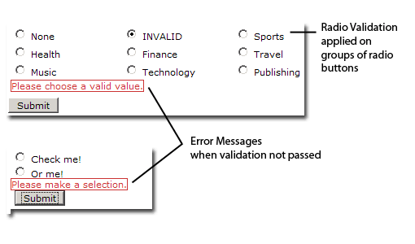

A Spry widget is a page element containing built-in behaviors and functions that provide a richer user experience by enabling user interaction. These behaviors can include functionality that lets users show or hide content on the page, change the appearance (such as color of the input) in the page, interact with menu items, and much more.
The Spry framework supports a set of re-usable widgets, written in standard HTML, CSS, and JavaScript. You can easily insert these widgets — the code is HTML and JavaScript at its simplest — and then style the widget according to your liking.
Each widget in the Spry framework is associated with unique CSS and JavaScript files. The CSS file contains everything necessary for styling the widget, and the JavaScript file gives the widget its functionality. You must link both of these files to the page on which you want the widget to function and appear styled. Otherwise, the widget won’t have any functionality or styling. For more information, see the appropriate sections about linking associated files in the topics that follow.
The CSS and JavaScript files associated with a given widget are named after the widget, so it’s easy for you to know which files correspond to which widgets. (For example, the files associated with the Validation Radio widget are called SpryValidationRadio.css and SpryValidationRadio.js).
The Validation Radio widget is a group of radio buttons with validation support for the selection. Users can easily adjust the validation rules they need to enforce. The Validation Radio widget can enforce the selection of one radio button from the group.
To create a Validation Radio widget, you only need a simple radio button input group that can be turned into a Spry Validation Radio widget by adding a few elements to it.
The following illustration shows a Validation Radio widget as seen in browser:

You can create a widget by simply adding a HTML tag container (e.g. <SPAN>) around the group of INPUT type="radio button" tags. The container tag must have an ID.
The Validation Radio widget has a set of default states associated. All these states are used to describe the browser behavior when the validation occurs.
A Validation Radio widget can be in one of the following states:
When the widget enters one of the above states, a specific CSS class is applied to the HTML tag container. The class definitions for each state are implemented in the SpryValidationRadio.css file associated to the widget.
Error messages can be added to a Validation Radio widget by creating a span tag (or any other tag type) to hold the error message text. By applying a specific css class on the message, you can hide the error message by default and show it only when the widget container has the specific class applied (when the widget state changes).
The code for the Validation Radio widget requires JavaScript script tags in the head section of the document and after the HTML markup. The script tag in the head of the document includes a JavaScript file where the functions related to the Validation Radio widget are defined. The script tag after the Validation Radio widget HTML code contains the constructor for the widget object.
The following is the HTML code for a Validation Radio widget along with an error message and the associated JavaScript code:
<head>
<script src="includes/SpryValidationRadio.js" type="text/javascript"></script>
<link href="SpryValidationRadio.css" rel="stylesheet" type="text/css" />
</head>
<body>
<span id="RadioWidget">
<input type="radio" name="fieldName" value="1">
<input type="radio" name="fieldName" value="2">
<span class="radioRequiredMsg">Please make a selection. </span>
</span>
<script type="text/javascript"> var radioWidgetObject = new Spry.Widget.ValidationRadio("RadioWidget"); </script> </body>
The constructor in the sample receives one parameter, the ID of the HTML tag container that holds the widget markup.
You’ll also notice that the span tag for the error message has a CSS class applied. The message can be hidden or shown by triggering different CSS rules on the error message container. This is done dynamically by applying different classes on the HTML widget tag container when the widget enters a validation state.
In the example above, SPANs are used to create the Validation Radio widget structure with its error messages.
Instead of the SPAN tag, any HTML structure can be used, because Spry only uses the tag ID to identify the widget container. The appearance of the error message is done using CSS cascading that doesn't look at the actual tag type of the error message.
In the above structure, the widget constructor identifies the HTML element whose ID has been passed as an argument and then looks inside the container for the corresponding radio button tags that needs to have validation applied. Error messages within the container SPAN can be used for validation.
The SpryValidationRadio.css file contains rules which trigger the messages to display. The rules in the CSS file correspond to the class names specified in the HTML markup for the error messages. However, more complex selectors are required, which take into account the fact that a parent container can have a state class applied to it.
The following is the CSS code for SpryValidationRadio.css file:
.radioRequiredMsg, .radioInvalidMsg{
display: none;
}
.radioRequiredState .radioRequiredMsg,
.radioInvalidState .radioInvalidMsg{
display: inline;
color: #CC3333;
border: 1px solid #CC3333;
}
This section contains the following topics:
Locate the SpryValidationRadio.js and add it to your site, if you didn't do it already. You can find the SpryValidationRadio.js file in the 'widgets/radiovalidation' folder in the Spry zip.
Locate the SpryValidationRadio.css file and add it to your site, if you haven't done so already. You might choose to add it to the root folder or to a CSS folder, if you have one.
In the page code, link the SpryValidationRadio.js file to your web page by inserting a script tag in the page’s head section:
<script src="includes/SpryValidationRadio.js" type="text/javascript"></script>
Make sure the file path to the SpryValidationRadio.js file is correct. This path will vary depending on where you include the file in your web site.
<link href="SpryValidationRadio.css" rel="stylesheet" type="text/css" />
Make sure the file path to the SpryValidationRadio.js file is correct. This path will vary depending on where you put the file in your web site.
<input type="radio" name="fieldName" value="1" />
<input type="radio" name="fieldName" value="2" />
<span id="RadioWidget">
<input type="radio" name="fieldName" value="1" />
<input type="radio" name="fieldName" value="2" />
</span>
<script type="text/javascript">
var radioWidgetObject = new Spry.Widget.ValidationRadio("RadioWidget");
</script>
It is important that you make sure the ID of the span tag matches the ID parameter you specified in the Spry.Widgets.ValidationRadio method. It is also important that you make sure the JavaScript call comes after the HTML code for the widget.
<head>
...
<script src="includes/SpryValidationRadio.js" type="text/javascript"></script>
<link href="SpryValidationRadio.css" rel="stylesheet" type="text/css" />
...
</head>
<body>
...
<span id="RadioWidget">
<input type="radio" name="fieldName" value="1" />
<input type="radio" name="fieldName" value="2" />
<span class="radioRequiredMsg">Please enter a value.</span>
</span>
<script type="text/javascript">
var radioWidgetObject = new Spry.Widget.ValidationRadio("RadioWidget");
</script>
...
</body>
Styling the Validation Radio widget means changing the appearance of the error messages for different states.
The Validation Radio widget comes with a CSS file (SpryValidationRadio.css) that provides default styling for the error messages. You can easily style the error messages to your liking by simply changing the appropriate CSS rules.
To change the state appearance of the Radio Validation widget:
Open the SpryValidationRadio.css file. You can find the SpryValidationRadio.css file in the 'widgets/radiovalidation' directory.
The Radio Validation widget comes with built-in CSS rules for the states and also for the elements (in this case, the error messages) that can be displayed for these states.
The following classes define the look of the elements associated to the Validation Radio widget:
.radioRequiredState (Activates when the input radio button is not selected or is the same with the default empty value.)
.radioInvalidState (Activates when the radio selected value is not allowed to be submitted.)
The following classes define the look of the error messages that are added for a state. The names of these classes are not tied to the JavaScript code. You can change them in both CSS and HTML as you wish. We just provide them into the CSS file as default values for faster integration of the Validation Radio widget. These classes are:
.radioRequiredMsg (Defines the look and feel for required error message in different widget states.) .radioInvalidMsg (Defines the look and feel for the "invalid value selected" message in different widget states.)
You cannot rename/replace class names associated with states in the SpryValidationRadio.css file only with class names of your own, because the behaviors are hard-coded into the Spry framework. However, you can replace the default class with your desired class name by sending the new value as argument to the radio button widget constructor. This does not apply for the error messages classes, as mentioned above.
Here is an example on how you can change the required state's CSS class name, without breaking its functionality:
<script type="text/javascript">
var RadioWidgetObject = new Spry.Widget.ValidationRadio("RadioWidget", {requiredClass: "required", invalidClass: "invalid" ,validClass: "valid"});
</script>
The SpryValidationRadio.css file has extensive comments, explaining the selectors and the logic behind certain rules. Check it out for further information on styling.
The behavior of the Validation Radio widget consists of:
For instance, when users try to submit the form with a required radio button from a group no&t selected, the form submission is blocked and the radioRequiredState class is applied to the widget container.
By default, the 'isRequired' property is set to true - that means that the user must select the radio button in order to submit the form. In order to allow the user to submit an un-selected value from the radio buttons group, the widget should have 'isRequired: false' as a property of the optional parameters.
<script type="text/javascript">
var RadioWidgetObject = new Spry.Widget.ValidationRadio("RadioWidget", {isRequired:false});
</script>
The 'submit' action always checks the validity of the widget's selections. Besides the validation on submit, you can define other two options for the validation process:
The validateOn:"blur" option will trigger the validation process when the Radio widget loses its focus. The validateOn: "change" option will trigger the validation process when the user is making the changes for the Radio widget. You can add these options as follows:
<script type="text/javascript">
var RadioWidgetObject = new Spry.Widget.ValidationRadio("RadioWidget", {validateOn:["blur", "change"]});
</script>
To combine multiple attributes, simple include them within the {}, separated by commas.
<script type="text/javascript">
var RadioWidgetObject = new Spry.Widget.ValidationRadio("RadioWidget", {defaultValue:"None", invalidValue:"None", validateOn:["blur", "change"]});
</script>
Copyright © 2006. Adobe Systems Incorporated. All rights reserved.